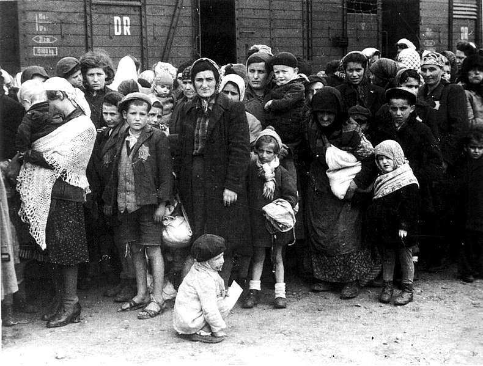

Selection and extermination process
On 31 July 1941, Hermann Göring gave written authorization to Heydrich, Chief of the Reich Main Security Office (RSHA), to prepare and submit a plan for Die Endlösung der
Judenfrage (the Final Solution of the Jewish question) in territories under German control and to coordinate the participation of all involved government organizations.
The resulting Generalplan Ost (General Plan for the East) called for deporting the population of occupied Eastern Europe and the Soviet Union to Siberia, for use as
slave labor or to be murdered. In addition to eliminating Jews, the Nazis also planned to reduce the population of the conquered territories by 30 million people
through starvation in an action called the Hunger Plan. Food supplies would be diverted to the German army and German civilians. Cities would be razed and the land allowed
to return to forest or resettled by German colonists.
Plans for the total eradication of the Jewish population of Europe—eleven million people—were formalized at the Wannsee Conference on 20 January 1942. Some would be worked
to death and the rest would be killed. Initially the victims were killed with gas vans or by Einsatzgruppen firing squads, but these methods proved impracticable for
an operation of this scale. By 1942, killing centers at Auschwitz, Sobibór, Treblinka, and other Nazi extermination camps replaced Einsatzgruppen as the primary method
of mass killing.
The first mass exterminations at Auschwitz took place in early September 1941, when 900 Soviet prisoners of war and ill inmates were killed by gathering them in the basement
of Block 11 and gassing them with Zyklon B. This building proved unsuitable for mass gassings, so the site of the killings was moved to the crematorium at Auschwitz I
(Crematorium I, which operated until July 1942). There, more than 700 victims could be killed at once. In order to keep the victims calm, they were told they were to
undergo disinfection and de-lousing. They were ordered to undress outside and then were locked in the building and gassed. After its decommissioning as a gas chamber, the
building was converted to a storage facility and later served as an air raid shelter for the SS. The gas chamber and crematorium were reconstructed after the war using
the original components, which remained on site. Some 60,000 people were killed at Crematorium I.